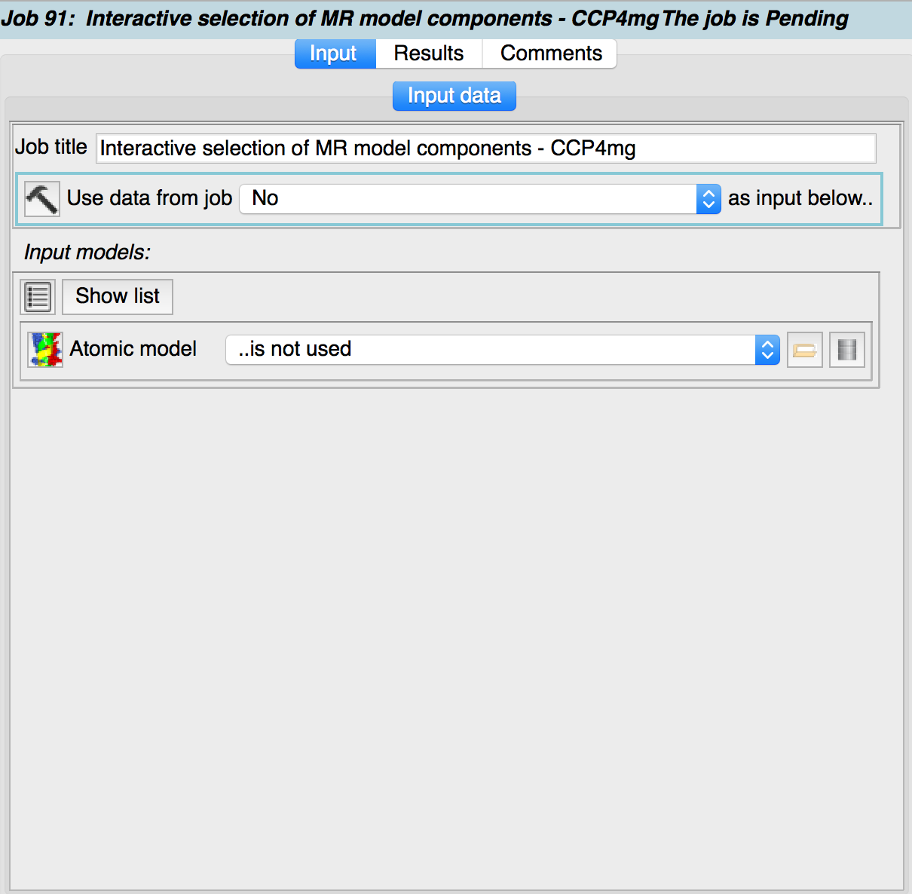
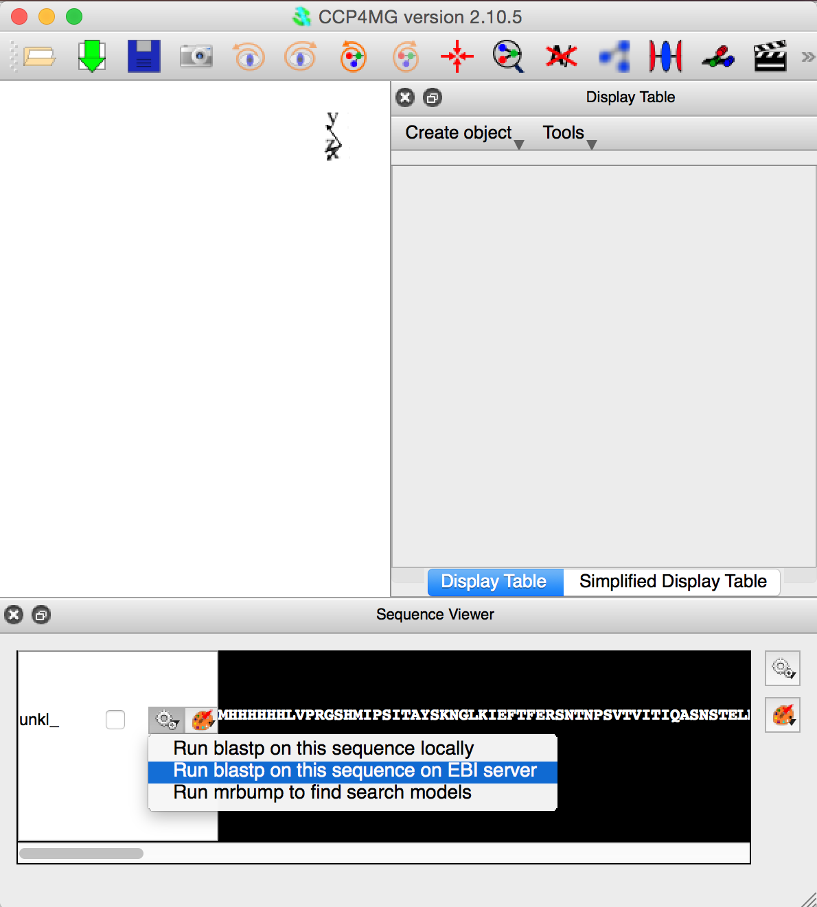
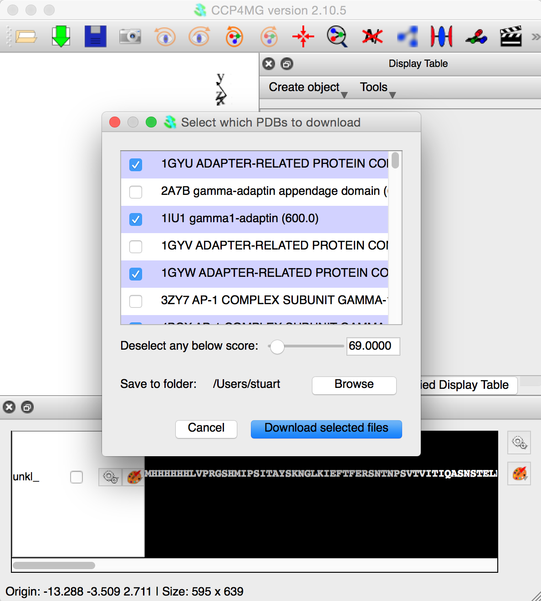
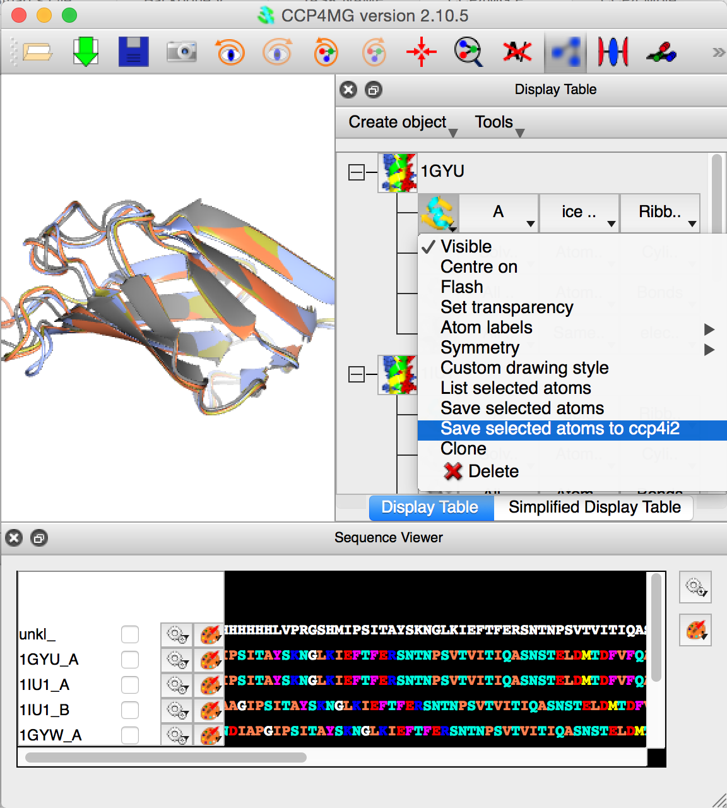
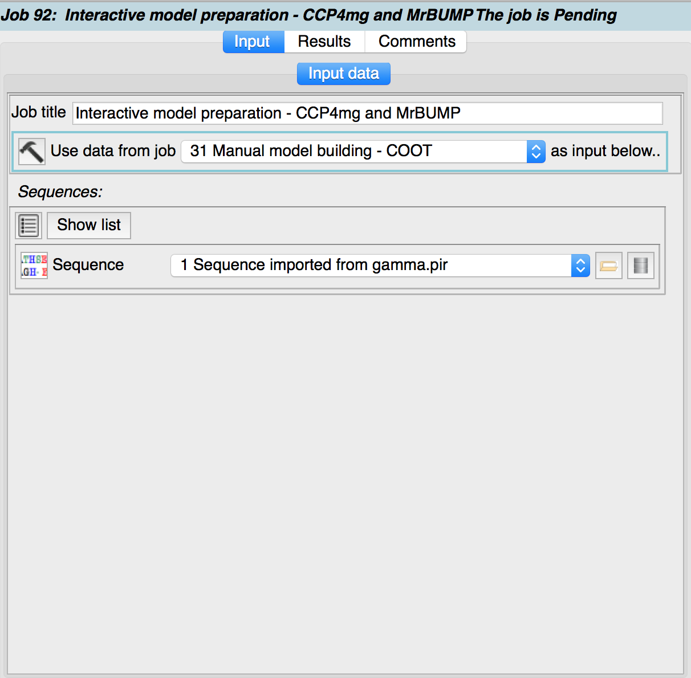
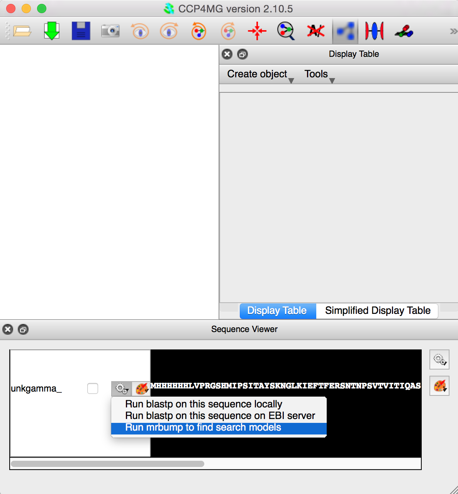
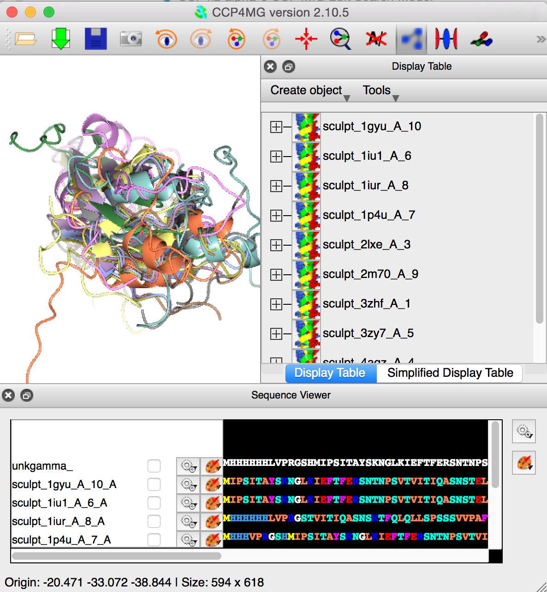
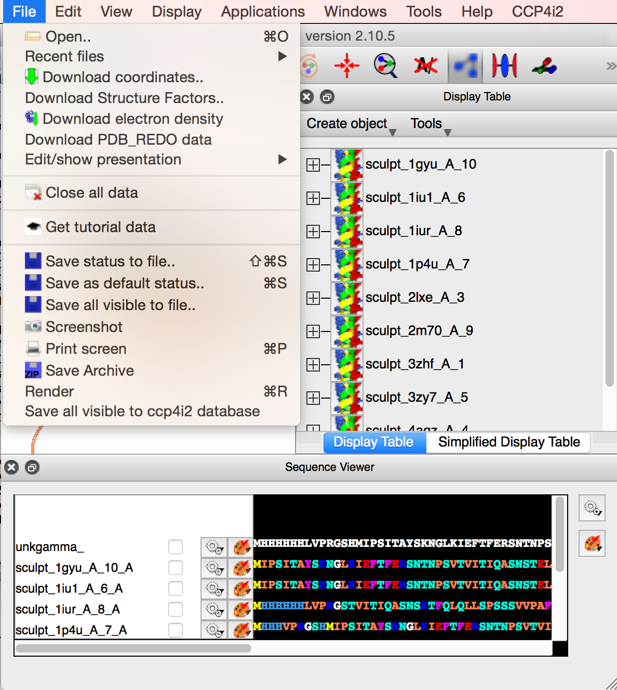

CCP4MG Edit Search Model¶
The “Interactive selection of MR model components -CCP4mg” and “Interactive model preparation - CCP4mg and MrBUMP” tasks are methods for visually preparing molecular replacement search models.
 In the simplest case (“Interactive selection of MR model components -CCP4mg”), CCP4MG is started with a structure to load specified in the task input. CCP4MG may then be used to select a subset of atoms from the loaded structure and then save these to the CCP4i2 database. Once the CCP4MG session is finished CCP4i2 will present a gallery of the structures which have been saved. The atom selection may be done using any of CCP4MG’s selection tools:- simple menu selections, Selection Browser, Sequence Viewer. The user has full control of which atoms are in the selections to be saved. The CCP4MG documentation should be consulted for further information.
More sophisticated model preparations may be done by performing a BLAST search on a sequence within CCP4MG. CCP4MG’s sequence viewer allows one to perform a BLAST search on a sequence which has been loaded into the program explicitly or on the sequence of a loaded coordinate file. CCP4MG presents a table of results from the BLAST search which lists the BLAST scores along with the relevant PDB files. A selection of the PDB files can be downloaded and loaded in CCP4MG using this table. Then the newly loaded PDB files can be used as in the simple case above: Subsets of atoms are selected and saved to the CCP4i2 database.
Even more powerfully, CCP4MG may be used to run MrBUMP (“Interactive model preparation - CCP4mg and MrBUMP”) to find molecular replacement search models. A coordinate file or just a sequence loaded into CCP4MG may be sent to MrBUMP. MrBUMP uses phmmer with a 70% non-reduntant search set to identify homologous structures, prunes the structures with Scultor and then aligns them using Gesamt. The pruned and aligned structures are then loaded into CCP4MG. The user may then select various sets of atoms from the loaded models and save them as an ensemble for use in a molecular replacement calculation.
Input¶
The input data is an atomic model or a sequence file.
The CCP4MG session¶
 The third figure opposite shows CCP4MG after a sequence has been loaded and how to submit the sequence to the EBI BLASTP service to run the blast search.
 The next figure shows the appearence of CCP4MG when the BLAST job is finished. The user has selected a subset of the files. Clicking “Download the selected files” button will download the PDB files and load them into CCP4MG. After this, the user can select whatever atoms are required and then save them to the CCP4i2 database.
 The final figure show CCP4MG with all “A” chains of the loaded PDB files superposed. The user is saving the “A” chain of 1GYU to the CCP4i2 database. This final is the important one whether one starts the whole process with a PDB file, or sequence followed by BLAST/MrBump.
Mr Bump¶
Starting with version 2.10.5 of CCP4MG bundled with CCP4MG, parts of the MrBUMP molecular replacement pipeline may be run from the program. CCP4MG may be used to run MrBUMP to find molecular replacement search models. A coordinate file or just a sequence loaded into CCP4MG may be sent to MrBUMP. MrBUMP uses phmmer with a 70% non-reduntant search set to identify homologous structures, prunes the structures with Scultor and then aligns them using Gesamt. The pruned and aligned structures are then loaded into CCP4MG. The user may then select various sets of atoms from the loaded models and save them as an ensemble for use in a molecular replacement calculation.
The general scheme for using MrBUMP in CCP4MG is:
Load a structure or more usually a sequence into CCP4MG
Open sequence viewer
Click on gear-wheel icon just left of sequence and select “Run mrbump to find search models”
Select atoms to display in usual ways using Display Table or Sequence Viewer. Hide any display objects which contain atoms not wanted in molecular replacement model
Click on File->Save all visible to ccp4i2 database to save a molecular replacement ensemble.
Use the saved file in molecular replacement program of your choice.
 Firstly a ccp4mg_edit_search_model task is started with a sequence specified as the input data.
 CCP4MG opens up with the Sequence Viewer open. Clicking on the gear wheel beside the sequence gives an option to run Mr Bump to find search models.
 MrBUMP has used phmmer with a 70% non-reduntant search set to identify homologous structures, pruned the structures with Scultor, aligned them using Gesamt. The pruned and aligned structures have been loaded into CCP4MG. The user should then use whatever atom selection tools are desired, including the Sequence Viewer. The visible atoms should constitute the required molecular replacement search ensemble.
 When happy, save the visible atoms to the ccp4i2 database, with File->Save all visible to ccp4i2 database. When the CCP4MG session is finished the search model will be an output file for the CCP4i2 task.
Results¶
The results tab presents a gallery of the structures saved to the CCP4i2 database during the CCP4MG session. These may be viewed in Coot or CCP4MG again.